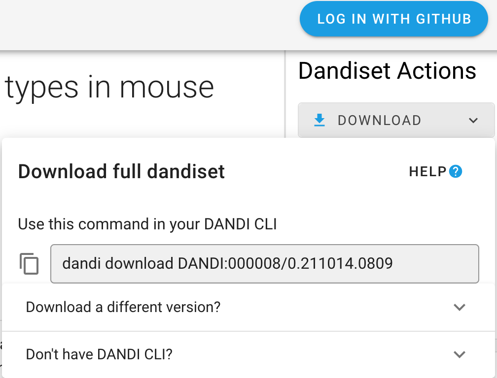

Downloading Data and Dandisets¶
You can download the content of a Dandiset using the DANDI Web application (such a specific file) or entire Dandisets using the DANDI Python CLI.
Using the DANDI Web Application¶
Once you have the Dandiset you are interested in (see more in the Dandiset View section), you can download the content of the Dandiset.
On the landing page of each Dandiset, you can find Download button on the right-hand panel. After clicking the
button, you will see the specific command you can use with DANDI Python CLI (as well as the information on how to download the CLI).

Download specific files¶
The right-side panel of the Dandiset landing page allows you also to access the list of folders and files.

Each file in the Dandiset has a download icon next to it, clicking the icon will start the download process.
Using the Python CLI Client¶
The DANDI Python client gives you more options, such as downloading entire Dandisets.
Before You Begin: You need to have Python 3.7+ and install the DANDI Python Client using pip install dandi.
If you have an issue using the Python CLI, see the Dandi Debugging section.
Download a Dandiset¶
To download an entire Dandiset, you can use the same command as suggested by DANDI web application, e.g.:
dandi download DANDI:000023
Download data for a specific subject from a Dandiset¶
You can download data for specific subjects.
Names of the subjects can be found on DANDI web application or by running a command with the DANDI CLI: dandi ls -r
DANDI:000023.
Once you have the subject ID, you can download the data, e.g.:
dandi download https://api.dandiarchive.org/api/dandisets/000023/versions/_draft_/assets/?path=sub-811677083
You should replace _draft_ with a specific version you are interested in (e.g. 0.210914.1900 in the case of this Dandiset).
You can also use the link from DANDI web application, e.g.:
dandi download https://dandiarchive.org/dandiset/000023/0.210914.1900/files?location=sub-541516760%2F
Download a specific file from a Dandiset¶
You can download a specific file from a Dandiset when the link for the specific file can be found on the DANDI web application, e.g.:
dandi download https://api.dandiarchive.org/api/dandisets/000023/versions/0.210914.1900/assets/1a93dc97-327d-4f9c-992d-c2149e7810ae/download/
Hint: dandi download supports a number of resource identifiers to point to a Dandiset, folder, or file. Providing
an incorrect URL (e.g. dandi download wrongurl) will provide a list of supported identifiers.